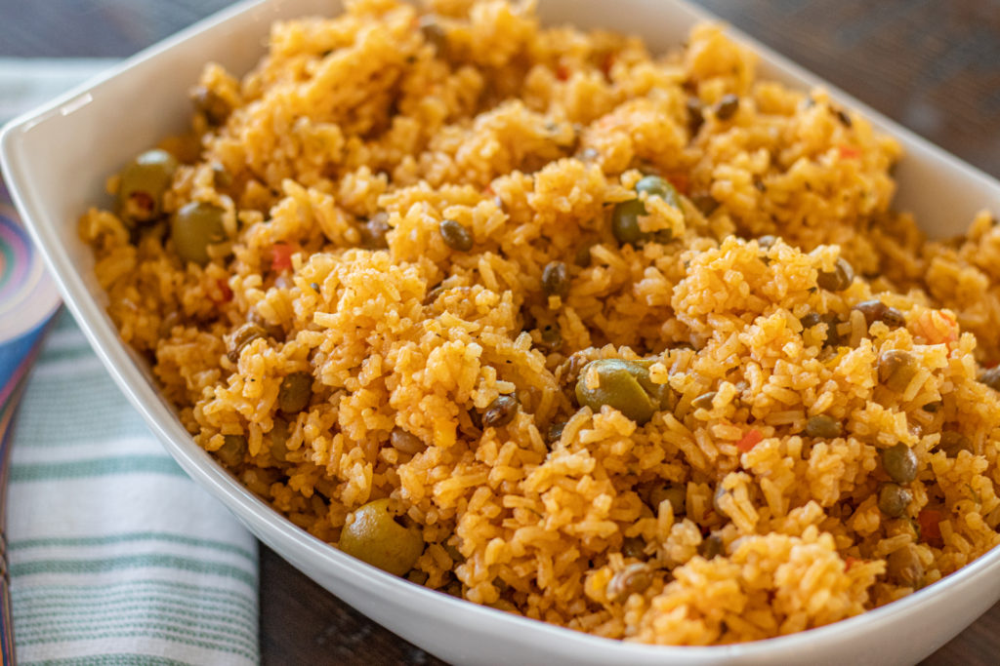
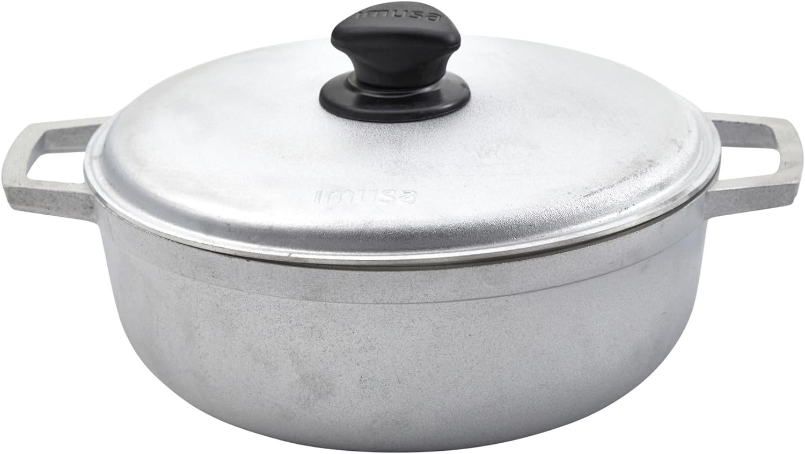

Arroz Con Ganddules

This is a staple recipe for me and many Puerto Rican families all around the country. Its a nice homey recipe that is versatile and easy to make, plus you will almost always have leftovers for the next day! This rice is super flavorful and can be the main dish for dinner or served with pork chops, aguacate, and papas rellenas or whatever you like!
Equipment

Ingredients
- 1⁄4 tsp cumin
- 1⁄4 cup vegetable oil
- 1⁄2 cup spanish oilves
- 1⁄2 cup sofrito
- 2 cups long-grain white rice
- 2 teaspoons sazon/to taste
- 1 teaspoon adobo/to taste
- 15 ounces canned gandules/pigeon peas
- 2 cups water
Instructions
- Rinse the rice multiple times until it's no longer cloudy. Then, drain the water from the rice.
- Heat vegetable oil in a caldero or dutch oven over medium-high heat. Once the oil is hot, add the rice and toast for 2-3 minutes.
- In a bowl, whisk together the sofrito, tomato sauce, sazon, cumin, and adobo. Pour and mix into the rice.
- Add the gandules with its liquid, olives (optional) and water. Mix and coat the rice well. Bring to a boil without a lid at medium-high heat until water has mostly evaporated.
- Next, mix the rice from edge to center a few times. Cover with a lid and reduce heat to low.
- Cook for about 20 minutes until tender. Taste and add additional salt/adobo if need be. If It’s a bit mushy or wet, allow the rice steam out without a lid for 10 minutes. If it’s undercooked, add ¼ cup of water and cook with a lid on low for another 10 minutes.